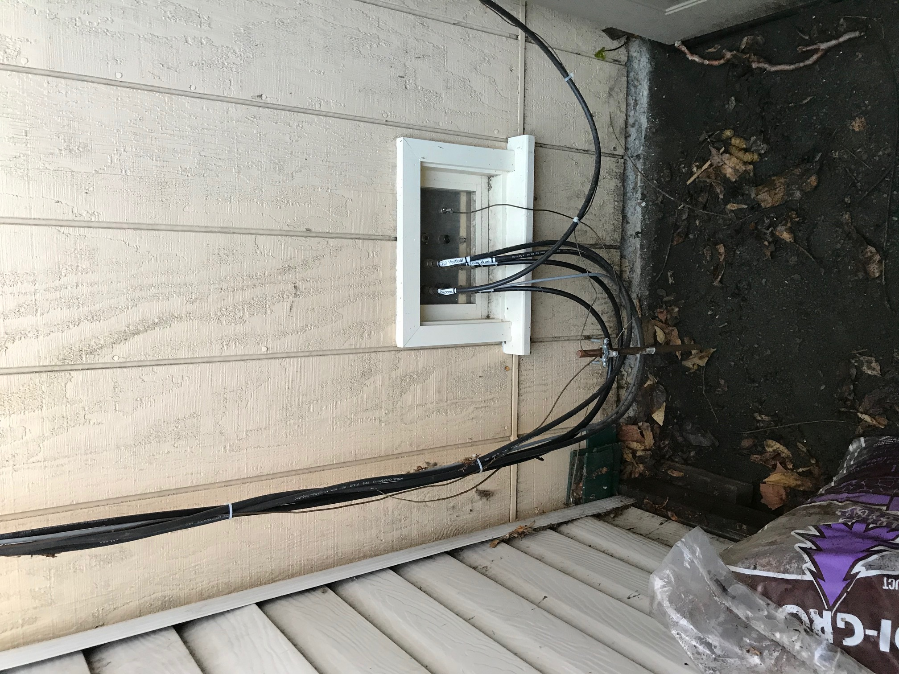
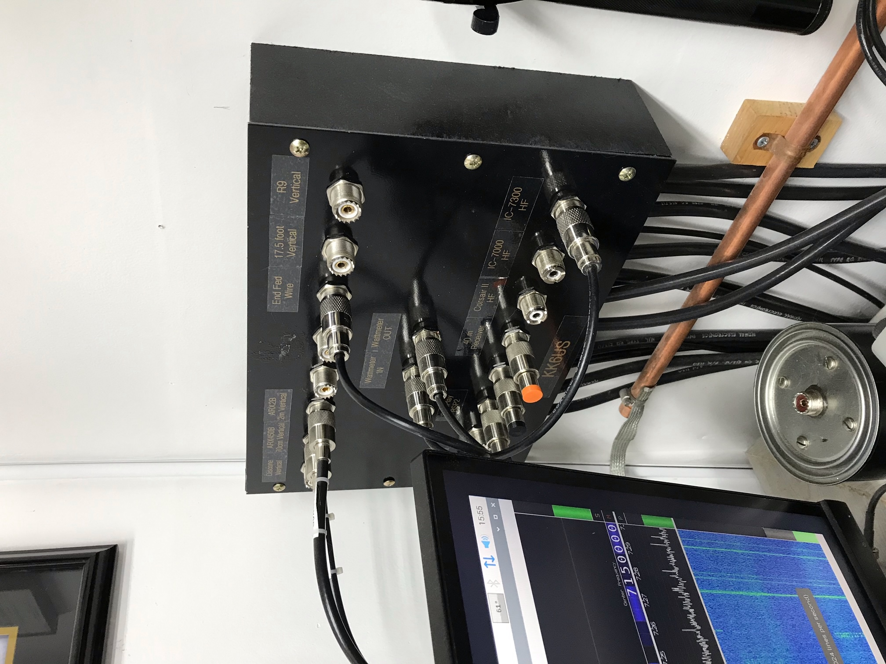

I’ve attached pictures of my approach to antenna access and connections that I used in my garage shack, shop. It’s basically a tiny window with aluminum instead of glass. This approach obviously requires a ground floor room and the willingness to build some very Ham-specific modifications. The patch panel allows easy interconnection of the Rigs and Antennas, even a Bird Watt Meter in between. The grounding is really just for lighting. (See Kristen’s K6WX presentation) 73 David P. Grybos KK6US   On Feb 24, 2021, at 5:37 PM, Jim Weatherford via Chat <chat@ncdxc.org> wrote:
|